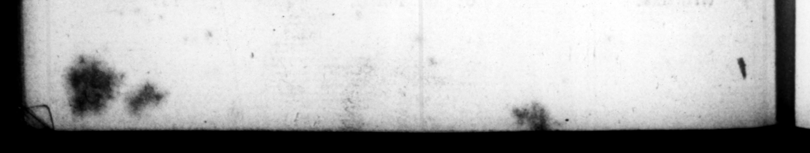

i Z . # , Gen Claudiorum , & eorum geſta. 3 12 De qua ſtirpe Tiberius genus traxit. FI OL De patre Tiberii. 4 Locus & tempus 'nativitatis Tiberii. | 5 Infantia & pueritia. My. Adoleſcentia & uxores. 7 Civilia officie. 8 Militia & bella per eum geſta, & honores adminiſtrati. 9 us ex urbe, & caulz. - 10 Mora apud Rhodum, & geſta 21 tbidem, Seſta apud Rhodnm. 12 eodem, ejuſque in urbem reditu. 13 Preſagia faturi priucipatus. 14 Adopiario ejus facta ab Auguſto, © 15 Viyricum per eum domitum. 16 Honores ei a ſenaty decreti. 17 eſta in Germania. 18 Diſciplina in re militari. 19 Triumphus Ilyricus, & alia etta. : 20 Gelta ejus, ac teſtimonia Auguſti, de eodem. 21 De Agrippa juvene occifo, & aliis geſtis. Va Gemitus ad teſtamentum Auguſti in Senatu recitatum. 23 Acceptio principatus 4d preces quali coats. 234 Cauſz, propter quas principatum recuſaverat, & alia geſta. 25 Cvilla geſta u initio en n Adulationes per eum ſpretæ, & prohibitæ. 27 tientia adverſus convicia, & maledicta. 28 Veneratio erga Senatum. 29 Priſtina auctoritas Senatus per eum ſervata. 30 Patientia contra obtrectatores. 31 Civilia & urbana geſta. 32 De eodem & allis geſtis. 33 Impenſz ludorum, ac munerum taxate, et alia geſta. 34 Quædam per eum bene geſta. 35 Exterx cœremoniæ, et fitus per eum prohibiti. 36 * n 42 ; Mora in nrbeg” & quod Mora fi lĩiorum, et ” * * yy Ab TIB ERIUS H. Quedam bene geſta pt tam R as non viſitsverit, in Campaniam. Seceſſus Capræenſis et alla geſta. 40 Peip. cura per eum abjeaa. 41 Ila, potus, ac com tones. 42 ens) = ac'l;hido, | + 43 Ineffabilis abuſus luxurig 44 - Ullntiones fœminarum. 45 Avaritſa, et tenacitas. 46 Opera publics eum, et ſpectacula non facta, et - parcitas alimonĩarum. Avaritia, et parcitas, geita. Odium contra couſangulueos et con junctos. | 850 fo Odium, et crudelitas in ma * 52 8 et dium contra ios. +. Crudelitas, et odium contra nurum. CONS F3 Crudelitas, et odium contra necages. 4.4 — 34 Crudclitas contra amicos. 55 Crudelicas et ſtevitia in grammaticos, et magiſtros. 56 Crudelitas in juventute. 57 Crimen læſæ ma jeſtatis ——_— actum. ö Atrociter geſta per eum ſub ſpecie gravitatis. 59 / Pœnæ graviſſimæ immeritis, propter modica commitla, wee Exvitia, & omnia genera crudelitatis. 61 Crudelitas, & ſtevitia aucta. 62 Suſpicio, qua vixit enn. 5 3 Suſpicio nurus, & nepotum dam- | natorum. Je x YE 64 Diffidentia & ſuſpicio. 65 Convicia, & libel contra eum edi ti. 66 Epiſtola, & oratio ad Senatum, de malis muritulgz ſais, ' 67 .S' aura, & membra, & | & inceſſus. Obſervario religionum. 69 Artes, & dilciplina. no | Periua 4 als 4s, Rapinz, et concuſſiones, 49
